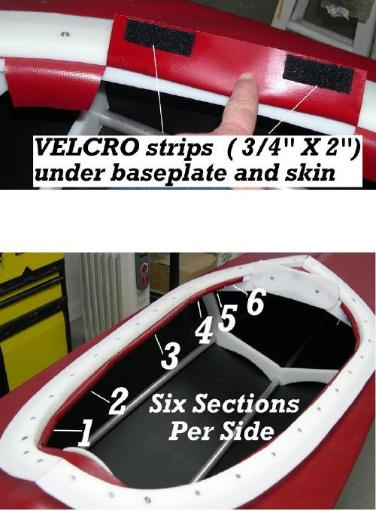

| Coaming Attachment (3 of 4) | Menu Last Page Next Page |
|  |
Split Coaming
5. Cut Velcro strips to approximately 3/4" X 2" and glue to the skin. Cover the entire base plate with a strip of Velcro.
Baseplate - Be sure the HDPE baseplate is clean and dry. Using the adhesive backing provided with the Velcro, attach to the baseplate. Skin - Velcro adhesive doesn't adhere well to PVC, so the adhesive backing and PVC must first be prepped with MEK. Dry completely and apply 2 - 3 coats of HH-66 to the skin and the Velcro adhesive backing. After drying, apply heat and pressure to insure a good bond.
6. After attaching Velcro to the skin and base plate, the skin is tucked under the coaming base plate and attached to the opposite Velcro strip. If needed, heat can be applied to the Velcro of the baseplate or skin for removal and replacement. |